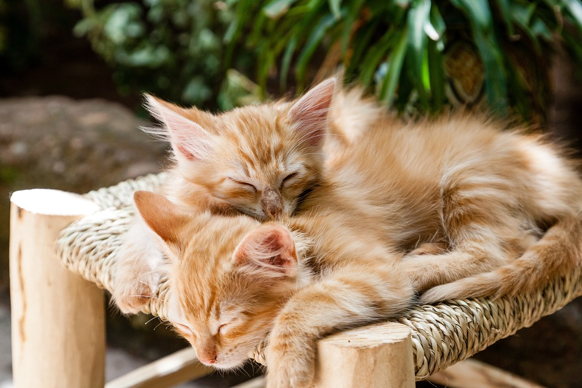

Informació
El gat o moix (Felis catus) és un petit mamífer carnívor domèstic. Es tracta de l'única espècie domesticada de la família dels fèlids i sovint és conegut com a gat domèstic per distingir-lo dels gats salvatges. Els gats poden ser casolans, de granja o ferals; aquests últims viuen en llibertat i eviten el contacte amb els humans. Els éssers humans tenen gats com a animals domèstics i per mantenir a ratlla els rosegadors i altres plagues.La seva anatomia s'assembla força a la de les altres espècies de fèlids, amb el cos fort i flexible, reflexos molt ràpids, dents afilades i urpes retràctils adaptades per matar preses de petites dimensions. Tenen la visió nocturna i el sentit de l'olfacte ben desenvolupats. Es comuniquen mitjançant vocalitzacions que inclouen miols, roncs, esbufecs i grunyits, així com el llenguatge corporal. Malgrat que cacen en solitari, són animals socials. Perceben sons massa fluixos o aguts per a l'orella humana, com ara els sorolls que fan els ratolins i altres mamífers petits. Habitualment surten a caçar durant el crepuscle.
